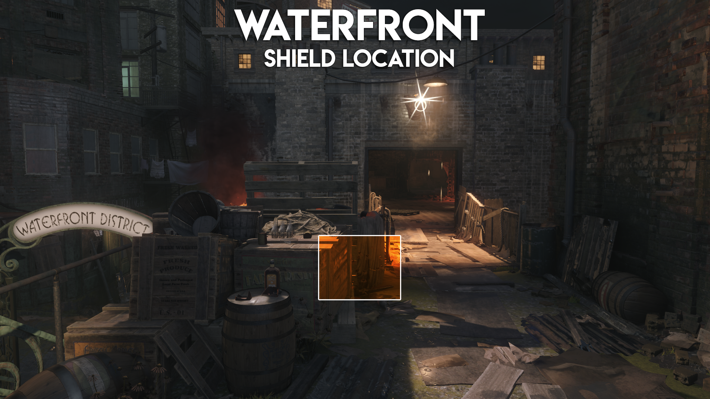
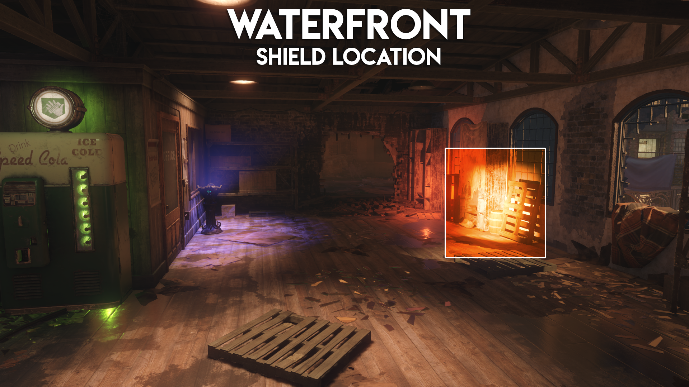
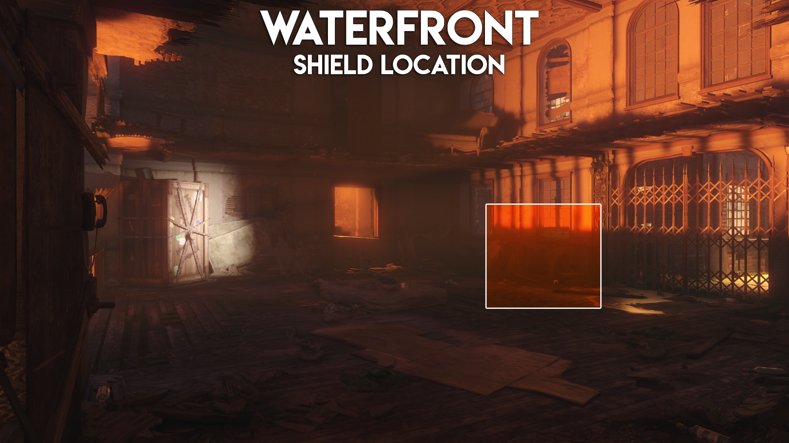
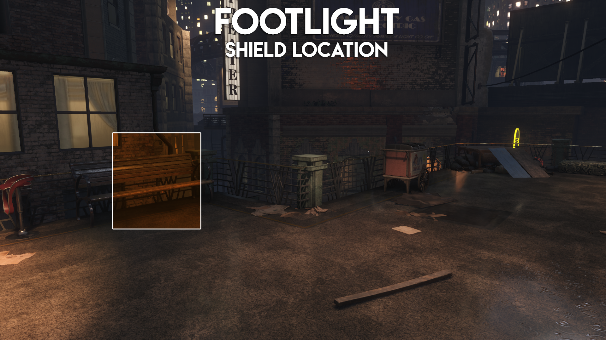
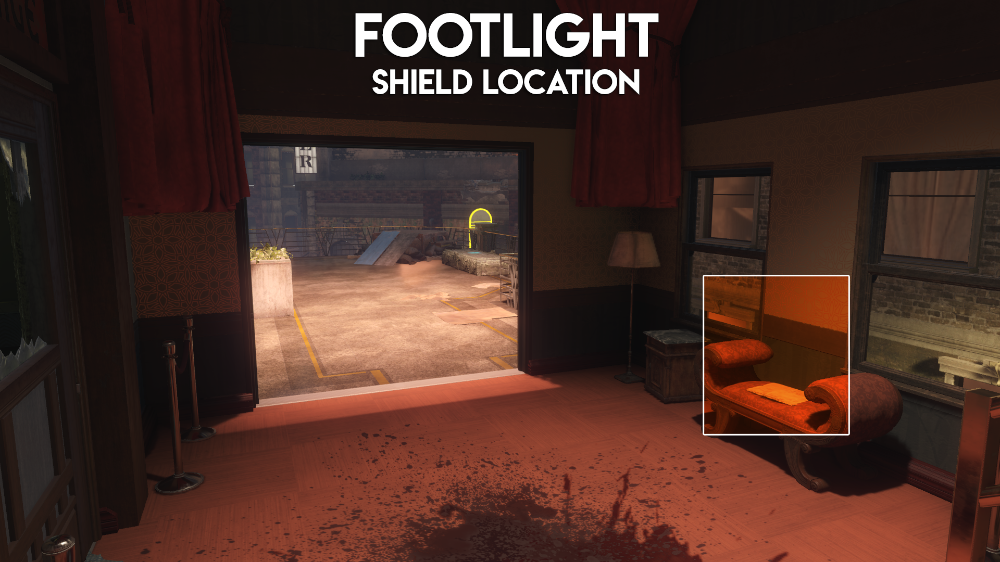
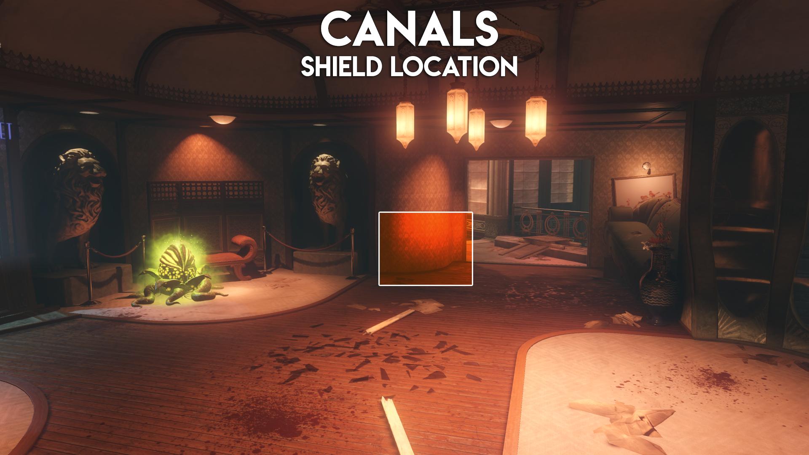
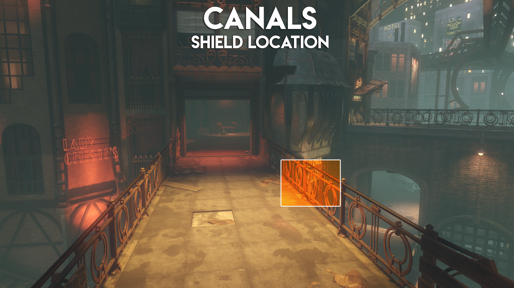

story
The setting takes place in the 1940's fictional Morg City where it introduces four new characters ‚ Nero Blackstone ‚ Jessica Rose ‚ Jack Vincent and Floyd Campbell as they are transported to a nightmarish realm by the Shadowman ‚ a supernatural being ‚ and the leader of the Apothicans. surrounded by zombies,; where they try to survive and escape.
map features
beast mode
There are multiple chalices around the map with flames on the top that will allow you to access "Beast Mode Once in beast mode you will be granted these abilities for a short amount of time:
- Electricity Attacks: You can use this to teleport zombies away,; power up fuse boxes,; and stun Margwas.
- Melee attacks: Pressing your knife/melee button will swing your tentacles in front of you and kill zombies,; open doors and boxes with chains on them.
- you can grapple to several areas .
- increased Stamina and Speed.
- invisibility to zombies.
If you have a beast mode available the apothicon symbol on your HUD will show up
blue. If you do not have
one it will show up red. Your Beast Mode ability will recharge once per round,;
unless if you're playing solo,; where it can go up to 3 charges.
power
to unlock power in parts of the map,; you need to use beast mode and shock certain fuse box to
activate power.
each district has its own fuse box that you need to shock to permenantly activate the machines in that
are.
- Junction/Spawn - Enter beast mode and look up from spawn at this location to grapple up to Nero's loft,; once inside Nero's loft follow the path through to the outside area and electrocute the fuse box. This will open a staircase from spawn to Nero's loft.
- Canals district - Enter beast mode and look up at this location and grapple up. Once you've grappled turn back on yourself and make your way through the red room and down the stairs and electrocute this fuse box. This will open this staircase.
- Waterfront district - Enter beast mode and look up at this location and grapple up. Once you
have
grappled up turn right and electrocute this fuse box. This will open this staircase.
- Footlight district - Enter beast and look up at this location and grapple up,; turn back around
and
make
your way to the stairs past the perk machine and electrocute this fuse. This will open this
staircase.
- Underground Rift / Junction - Enter beast mode anywhere inside the Underground/Rift area,; make
your way
up all the stairs and zap the fuse box. This will allow access from the Junction to the Rift
without the
use of the teleporters.
fumigator
the fumigator is used to open pods around the map.
the pods have three stages going from : green to red finising at purple pods. br
every time the pods has changed its color it brings better items when you open it with the
fumigator.
the fumigator can be found at:
-
Spawn Fumigator Locations
- Directly in front of the beast mode chalice
- In the back of the truck in front of Quick Revive
- Behind spawning in location, against the wall
-
Junction Fumigator Locations
- On a fruit stand near the Canals entrance
- On the chair next to the Stamin-up perk
- Right next to the gobblegum machine on a box
- In front of the ice cream shop on top of a small box
-
Canals Fumigator Locations
- As you enter the Canals district turn right and it is located next to the beast mode chalice
- On the path to the Ruby Rabbit another one can be found near the gobblegum machine on top of a crate
-
Waterfront Fumigator Locations
- As you go through the Waterfront district door - on the floor in the rubble
- Towards the centre of the Waterfront district near the Gobblegum machine on the floor
- Up the Waterfront district's beast mode shortcut stairs, just on the left on top of a barrel
buildables
in Shadows of evil you have 2 items you can build:
rocket shield
the rocket is very powerfull,; as it protects your back from being attacked
and it has a special ability where you propel forward,; killing anny zombies in yor way.
the rocket shield has been seperated into three pieces around the map,; these can be found
at:
-
Waterfront Shield Piece Locations
-
On the small bridge outside the room from the Waterfront randomized perk machine location  -
Opposite the beast mode chalice on the floor near the ranomized perk machine location  -
Slightly further down the hall in the room that seems like it's on fire 
-
-
Footlight Shield Piece Locations
-
Directly opposite the Footlight randomized perk machine against a bench  -
Next to the Footlight randomized perk machine against the metal fence 
-
>Around the corner from the Footlight randomized perk machine going towards the Burlesque on a small bench 
-
-
Canals Shield Piece Locations
-
In the room with the lions heads against the wall  -
On the bridge between the lions head room and the perk machine room  -
Opposite the Canals randomized perk machine against the window
-
upgraded shield
The upgraded Zombie Shield has no physical difference. However, it has four rocket boosts instead of one and takes additional hits before it is destroyed. To obtain this, you must boost through 10 Zombies at once 3 times. Once the upgraded shield breaks, you will have to repeat the boosting through 10 zombies step to obtain it again.
apotican servant
The Apothicon Servant can be obtained by getting 3 parts doing various tasks around the map. Only 1 player can obtain the Apothicon Servant.
- Apothicon Tentacle: You can only obtain this as a random drop from fumigating a purple pod from around the map.
- Xenomatter: This will only drop from the Meatball type enemies and it will be a bright green set of egg like balls.
- Margwa Heart: You will simply need to kill any Margwa and it will drop a yellow-margwa heart.